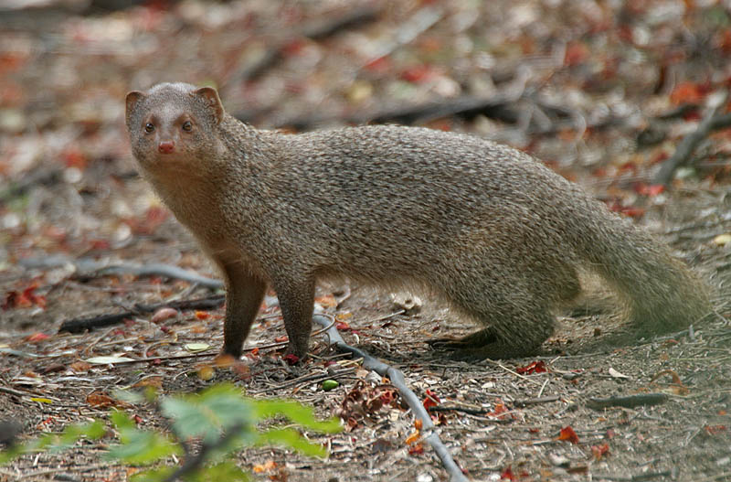

Location : Umaria district of Madhya Pradesh
Established in : 1968
Area : 1536 km2 Flora : The flora in Bandhavgarh Park is varied and ranges from grasslands to densely forested slopes. The
forest in Bandhavgarh National Park, falls within the tropical moist deciduous belt dominated by Sal and Bamboo, which form
varying mixtures with each other.
Fauna : Bengal tiger (very high density), gaur, sambar, barking deer, nilgai, chital, striped hyena, caracal,
Indian leopard, Indian wolf, etc. Birds include plum-headed parakeet, green-headed barbet, orange-headed thrush,
brown-headed barbet, coppersmith barbet, common myna, Alexandrine parakeet, Indian grey hornbill, rock pigeon, house crow,
carrion crow, little egret, cattle egret, great egret, black drongo, pond heron, common snipe, black-winged stilt, red-wattled
lapwing, Indian peafowl, greater coucal, oriental magpie robin, Indian roller, Indian robin, Eurasian collared dove, hoopoe,
sirkeer malkoha, large-billed crow, white-browed fantail flycatcher, yellow-crowned woodpecker, rufous treepie (normal and
pallida), lesser adjutant stork, oriental white eye, olive-backed pipit, spotted dove, white-throated kingfisher, red-rumped
swallow, lesser whistling teal, common kingfisher, black stork, Asian green bee-eater, greater racket-tailed drongo, red-vented
bulbul, long-billed vulture, grey-capped pygmy woodpecker, chestnut-shouldered petronia, crested serpent eagle, black redstart,
brahminy starling, brown fish owl, yellow-footed green pigeon, Malabar pied hornbill, common kestrel, white-throated fantail
flycatcher, rufous woodpecker, sapphire flycatcher, crested hawk eagle (Cirrhatus), oriental turtle dove, white-rumped vulture,
lesser kestrel, large cuckooshrike, pied bushchat, black-winged cuckooshrike, black-rumped flameback woodpecker, house sparrow,
golden oriole, rose-ringed parakeet, paddyfield pipit, dusky crag martin, long-tailed shrike, black ibis, white-necked stork,
purple sunbird, giant leafbird, Tickell's flowerpecker, little cormorant, little brown dove, white-tailed swallow, jungle
babbler, shikra, jungle myna, common tailorbird, red collared dove, red-necked vulture, painted francolin, Eurasian thick-knee,
common sandpiper, lesser spotted eagle, greater whistling teal, great cormorant, pied kingfisher, laughing dove, Bonelli's
eagle, dark black crow, Asian pied starling, Asian Duck.
Bandhavgarh National Park
Indian wolf
Oriental turtle dove
Orange-headed thrush
Kanha National Park
Location : The two districts Mandla and Balaghat
Established in : 1955
Area : 940 km2 Flora : Kanha Tiger Reserve is home to over 1000 species of flowering plants. The lowland forest is a mixture
of sal (Shorea robusta) and other mixed-forest trees, interspersed with meadows. The highland forests are tropical
moist, dry deciduous type and of a completely different nature from bamboo (Dendrocalamus strictus) on slopes. A notable
Indian ghost tree (Davidia involucrata) can also be seen in the dense forest.
Fauna : The park hosts populations of tiger, leopard, wild dog, sloth bear, foxes and jackals. Barasingha
(Cervus duavcelli branderi) is adapted to hard ground. Gaur (Bos gaurus) inhabits meadows and waterholes in the
park. Blackbuck has become very rare.
The reserve hosts around 300 species of birds and the most commonly seen birds are the black ibis, bee-eaters, cattle egret,
blossom-headed parakeets, pond herons, drongos, common teal, crested serpent eagle, grey hornbill, Indian roller, lesser
adjutant, little grebes, lesser whistling teal, minivets, Malabar pied hornbill, woodpeckers, pigeon, paradise flycatchers,
mynas, Indian peafowl, red junglefowl, red-wattled lapwing, steppe eagle, Tickell's blue flycatcher, white-eyed buzzard,
white-breasted kingfisher, white-browed fantail, wood shrikes, and warblers, vultures among many more.
Features : It was designated a tiger reserve in 1973.
Kanha National Park
Barasingha
White-breasted kingfisher
Crested serpent eagle
Kuno National Park
Location : Sheopur and Morena districts of Madhya Pradesh
Established in : 1981
Area : 748.76 km2 Flora : The vegetation of the protected area includes Anogeissus pendula forest and scrub,
Boswellia and Butea forest, dry savanna forest and grassland and tropical riverine forest.
Fauna : Indian leopard, jungle cat, sloth bear, dhole, Indian wolf, golden jackal, striped hyena and Bengal
fox. Ungulates include chital, Sambar deer, nilgai, four-horned antelope, chinkara, blackbuck and wild boar. Honey badger,
Indian grey mongoose, ruddy mongoose, small Asian mongoose, gray langur, Indian crested porcupine and Indian hare have also
been recorded. Reptiles present include mugger crocodile, Gharial, Bengal monitor and Indian softshell turtle. Indian
white-backed vulture, long-billed vulture, red-headed vulture, Egyptian vulture, crested serpent-eagle, short-toed snake eagle,
Bonelli's eagle, white-eyed buzzard, changeable hawk-eagle, brown fish owl and spotted owlet are resident raptors. Avifauna
also includes black-shouldered kite, painted spurfowl, ruddy shelduck, Indian peafowl, grey francolin, Eurasian nightjar,
jungle nightjar, Indian nightjar, painted sandgrouse, woolly-necked stork, great stone-curlew, Sirkeer malkoha, Indian golden
oriole, black-rumped flameback, bay-backed shrike and Indian paradise flycatcher.
Kuno National Park

Indian grey mongoose
Demoiselle crane
Gharial
Madhav National Park
Location : Shivpuri District of Gwalior division in northwest Madhya Pradesh
Established in : 1958
Area : 354 km2 Flora : Mixed and deciduous, and flat grasslands around the lake
Fauna : The predominant animal species that inhabits the park is the deer, of which the most easily sighted are
the graceful little chinkara or Indian gazelle, and the chital. Other species that have their habitat in the park are nilgai,
sambar, chausingha or four-horned antelope, blackbuck, sloth bear, Indian leopard and the common langur. Birds found are
migratory geese, pochard, pintail, teal, mallard and gadwall, red-wattled lapwing, large pied wagtail, Indian pond heron,
white-breasted kingfisher, cormorant, painted stork, white ibis, laggar falcon, purple sunbird, Indian paradise flycatcher and
golden oriole.
Features :
Madhav National Park
Golden oriole
Blackbuck
Chinkara
Mandla Plant Fossils National Park
Location : Mandla district, Madhya Pradesh
Established in : 1968
Area : 0.27 km2 Flora : Tree species found are Tectona grandis, Diospyros melanoxylon, Madhuca indica,
Buchnania latifolia, Anogeissus latifolia, Lannea coromandelica, Bosswelia serrata, Lantana
camera, Grewia sp., Nyctanthus arbortristis, Zyziphus mauritiana, Apluda mutica, Themeda
quadrivalvis, Meteropogon contortus, Arishtida sp. etc.
Fauna : Mammals are Tiger, Leopard, Wild Dog, Gaur, Chinkara, Hyena, Jackal, Sloth Bear, Sambar, Nilgai, Wild Pig,
Chausingha, Barking Deer, Palm Civet, Small Indian Civet, Jungle Cat, Porcupine, Langurs, Spotted Deer, Indian Fox, Common
Mongoose, Common Giant Flying Squirrel etc. Birds are Long Billed Vulture, Malabar Pied Hornbill, Indian Pitta, Osprey,
White Backed Vulture, Himalayan Griffon Vulture, Grey-headed Fishing Eagle, White-eyed Buzzard, Spotted Dove, Rose-ringed
Parakeets, Indian Roller, Little Green Bee-eaters, Black Kites, Black Drongos, Jungle Babblers, Common Indian Crow, Red-vented
Bulbuls, Baya weaver, White-throated Kingfishers, Crested Serpend Eagle, Crested Hawk Eagle, Treepies, Racket tailed drongos,
White bellied drongos etc.
Features : tourists can see fossils showcased in open platforms. Informative notes have been provided in
written format so that tourists may have understanding of what they are watching. In addition to this, a small museum can be
seen where seeds and leaf fossils have been preserved and showcased. The fossils that were found were that of plants, climbers,
leaves, seeds, flowers and fruits.
Mandla Plant Fossils National Park
Plant fossils in the national park
Panna National Park
Location : Panna and Chhatarpur districts of Madhya Pradesh
Established in : 1981
Area : 542.67 km2 Flora : The National Park is situated at a point where the continuity of the Tropical and subtropical dry
broadleaf forests belt, which starts from Cape Comorin in South India, is broken and beyond this the Upper Gangetic Plains
moist deciduous forests of the great Indo-Gangetic Plain begins. This area is the northernmost tip of the natural teak forests
and the easternmost tip of the natural 'Kardhai' Anogeissus pendula forests.
Fauna : Tiger, leopard, chital, chinkara, nilgai, sambhar and sloth bear. The park is home to more than 200
species of birds including the bar-headed goose, honey buzzard, king vulture, blossom-headed parakeet, changeable hawk-eagle
and Indian vulture.
Panna National Park
Bar-headed goose
Blossom-headed parakeet
Pench National Park
Location : Seoni and Chhindwara districts of Madhya Pradesh
Established in : 1975
Area : 257.26 km2 Flora : The forest cover in the park area includes teak mixed with other species like saja, bijiayasal, lendia,
haldu, dhaora, salai, amla, amaltas. The ground is covered with maze of grasses, plants, bushes and saplings. Bamboo is also
found at places. Scattered white kulu trees, also referred to as 'ghost tree', stand out conspicuously among the various hues
of green. Another important tree for both wildlife and tribal people of this region is mahua.
Fauna : Bengal tiger, chital, sambar, nilgai, wild boar, jackal, Indian leopard, sloth bear, indian
wolf, wild dog, porcupine, monkeys, jungle cat, fox, striped hyena, gaur, four-horned antelope and barking deer. Birds are
peafowl, junglefowl, crow pheasant, crimson-breasted barbet, red-vented bulbul, racket-tailed drongo, Indian roller, magpie
robin, lesser whistling teal, pintail, shoveller, egret and herons, minivet, oriole, wagtail, munia, myna, waterfowl and common
kingfisher.
Features : The area of the present Pench Tiger Reserve has been described in Ain-i-Akbari, and is the
setting of Rudyard Kipling's The Jungle Book.
Pench National Park
Chital
Common kingfisher
Sanjay National Park
Location : Singrauli district of Madhya Pradesh
Established in : 1983
Area : 466.657 km2 Flora : Mostly composed of tropical forests of Sakhua (Shorea robusta) trees, Bamboo and mixed forests.
Fauna : The Bengal tiger, Indian leopard, Spotted deer, Sambar deer, wild boar, Nilgai, Chinkara, Civet,
Porcupine, Monitor lizard, and 309 species of birds are found here. Among the many birds here are the Golden Hooded Oriole,
Racket-tailed Drongo, Indian pitta, Rufous treepie, Lesser adjutant, Red-headed vulture, Cenareous vulture, White-rumped
vulture, Egyptian vulture and Nightjar.
Sanjay National Park
Porcupine
Indian pitta
Satpura National Park
Location : Hoshangabad district, Madhya Pradesh
Established in : 1981
Area : 524 km2 Flora : Over 1300 species of plants which comprises teak, Sal, tendu, mahua (Indian butter-tree), bel
(stone-apple), bamboos, grasses etc. Satpura Tiger Reserve has more than 62 trees species, 30 small tree species, 58 shrubs
species, 32 climber species and almost 64 grass species with important medicinal plants and endemic rare herbs.
Fauna : About 50 species of mammals, 254 species of birds, 30 species of reptiles, 50 species of butterflies.
Spotted Deer, Indian Bison (Gaur), Tigers, Leopards, Wild boar, Wild dog (locally called Dholes),
Sloth bear, Black buck (unique attraction), Porcupine, Sambhar, Barasingha, four Horned antelopes (Chowsingha), Pangolin,
Marsh crocodile, Langurs, Indian giant squirrel, flying squirrel, rhesus monkey, etc. Birds are Malabar whistling thrush, paradise flycatcher, honey
buzzard, Malabar pied hornbill, etc. Butterfly species include Oakleaf, Black Rajah, Great Eggfly, Blue Pancy etc.
Satpura National Park
Giant squirrel
Malabar whistling thrush
Van Vihar National Park
Location : Bhopal, the capital city of Madhya Pradesh
Established in : 1979
Area : 4.48 km2 Flora : The flora in Van Vihar national park includes trees, creepers and grasslands. The major trees that are
found in van Vihar national park are Teak, Kardhai, Salai, Palas, Tendu and Gurajan.The Grasses include Rusa, Dub, Kush, Kusai,
Chhir and Kanas. Other varieties of grass like Lapusari, Phulera and Bhanjura are also found. Creepers are Gomachi, harjudi,
Karech, Bangoon Creeper and Malkangni. Parasitic plants like Amarbel and Bandha are also found.
Fauna : Bengal tiger, Asiatic lion, Asiatic wildcat, Indian wolf, Sloth bear, Red fox, Indian jackal, wild
dog, mongoose, striped hyena, mugger crocodile, gharial, snakes such as the python, Chital, sambar, blackbuck, nilgai,
four-horned antelope, wild boar, porcupine, hare, Rhesus macaque, common langur. Indian star tortoise, turtles, and a variety
of fish occur.
Features : Van Vihar is unique because visitors access it from a road through the park, and trenches, walls,
and chain-link fencing protect the animals from poachers while providing natural habitat.